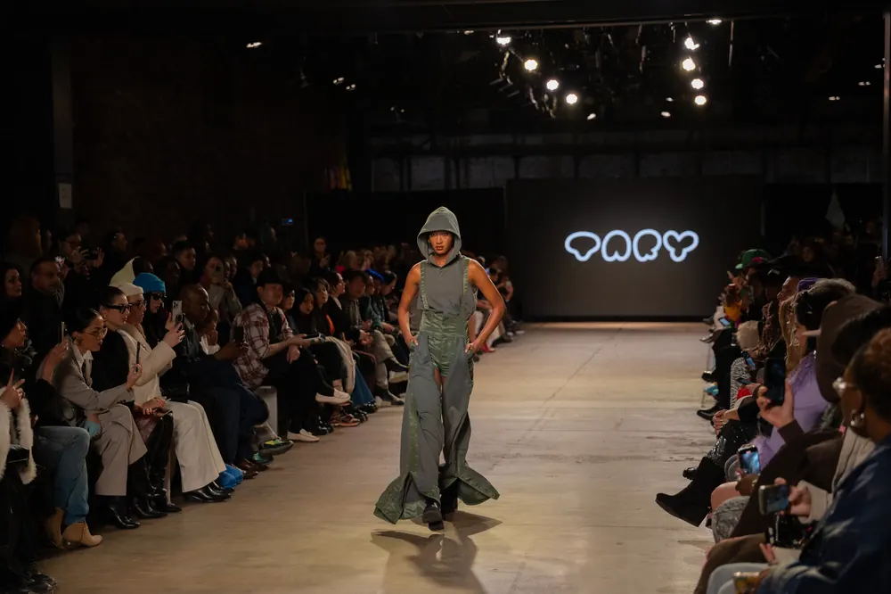
New York · Février 2025
New York Fashion Week FW25
Ma première Fashion Week : FILIPINXT et les cinq défilés du Global Fashion Collective, en une semaine à New York.
FILIPINXT
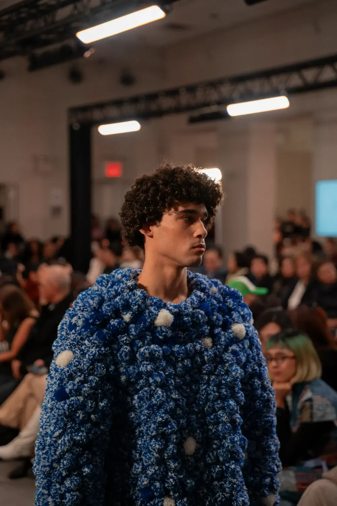
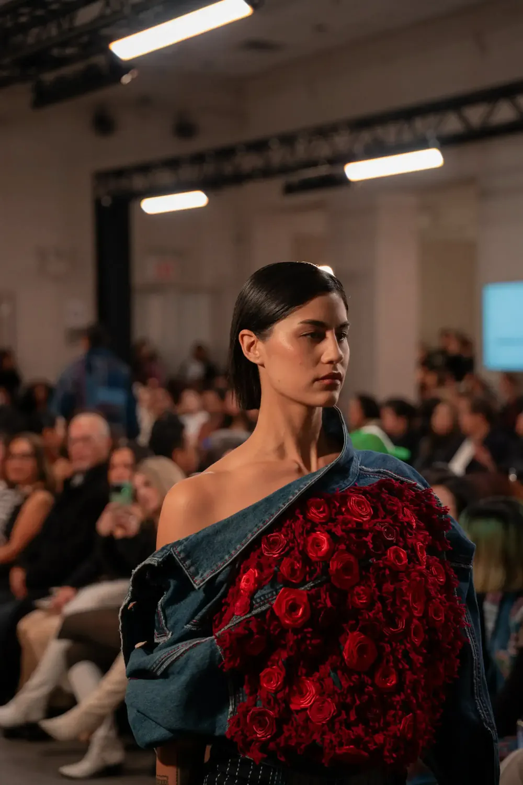
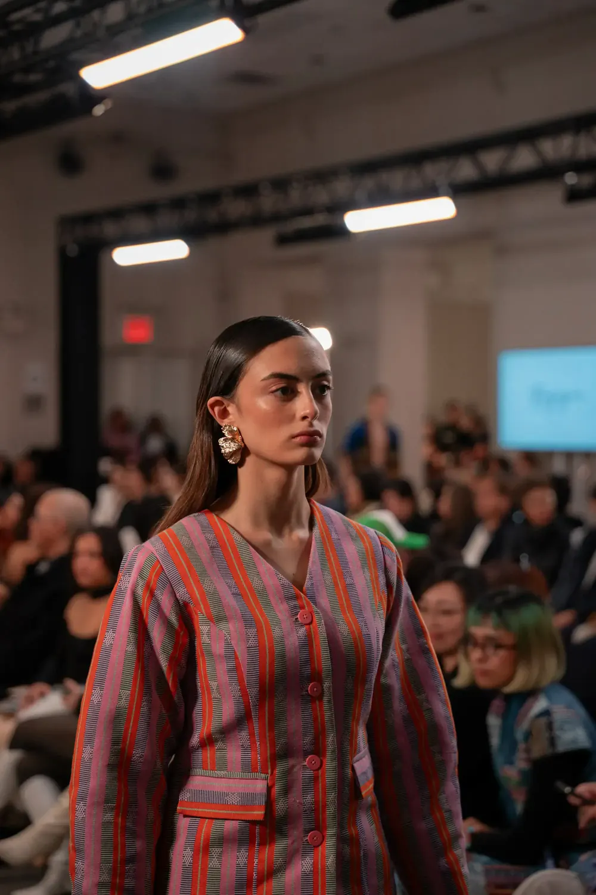
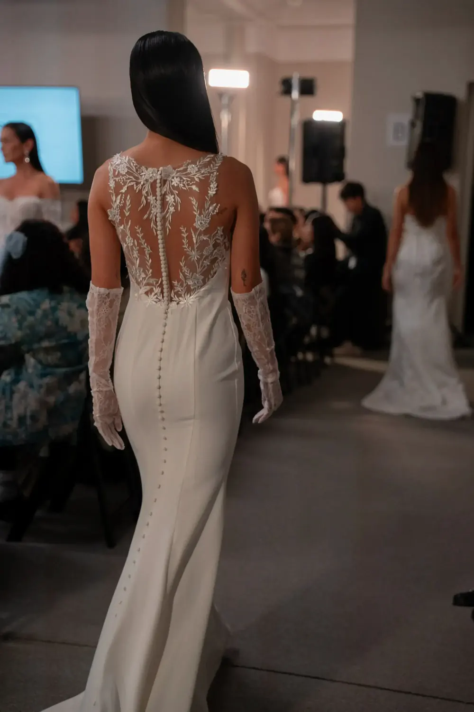
FILIPINXT · Défilé automne-hiver 2025 · New York · FW25
Global Fashion Collective
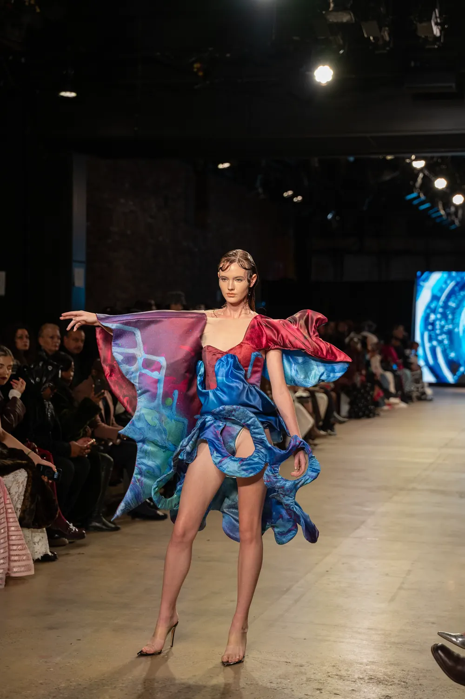
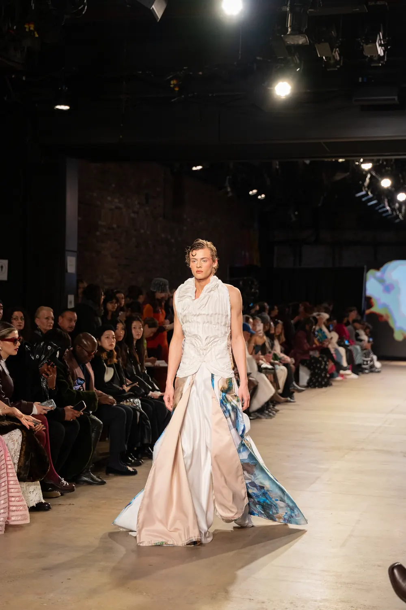
Global Fashion Collective · Défilé automne-hiver 2025 · New York · FW25
Global Fashion Collective
Kehang
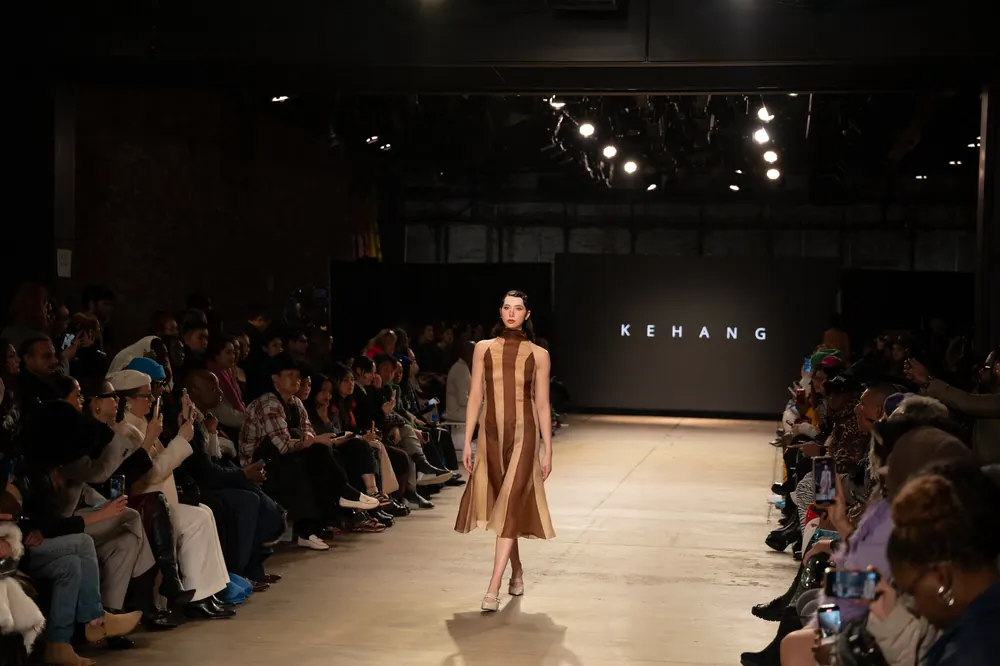
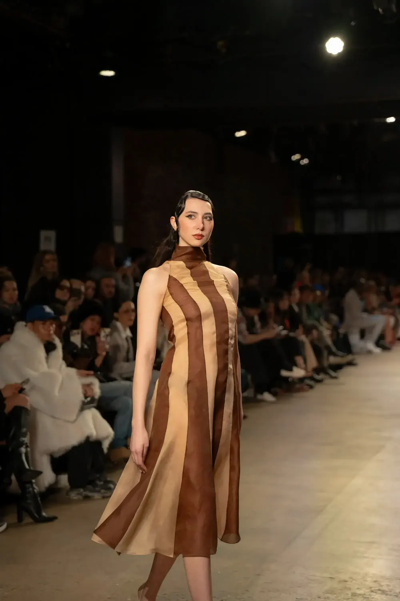
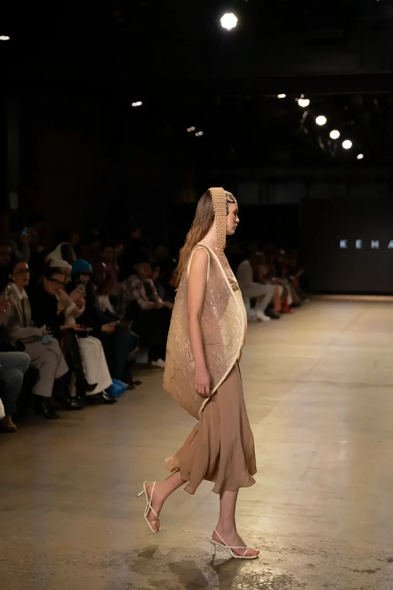
Global Fashion Collective · Kehang · Défilé automne-hiver 2025 · New York · FW25
Global Fashion Collective
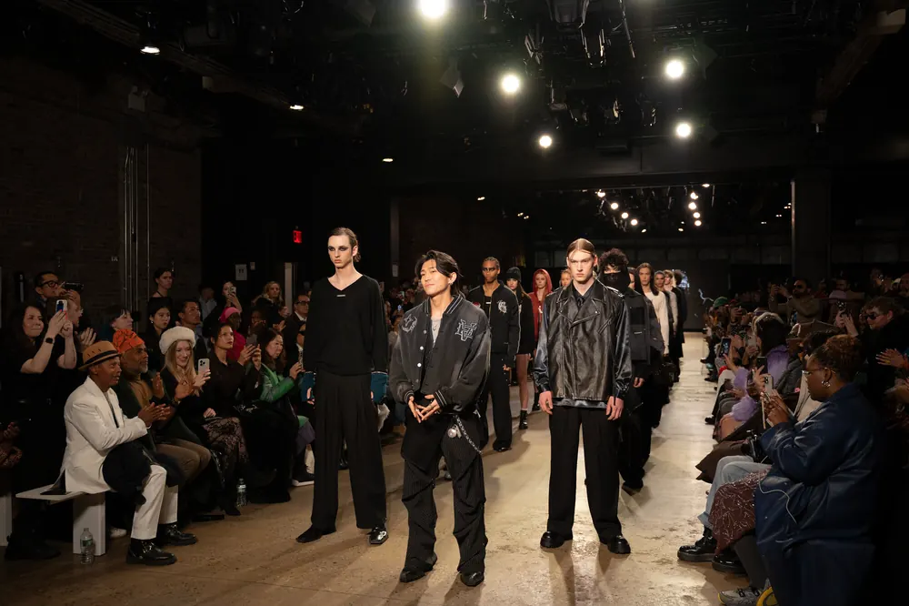
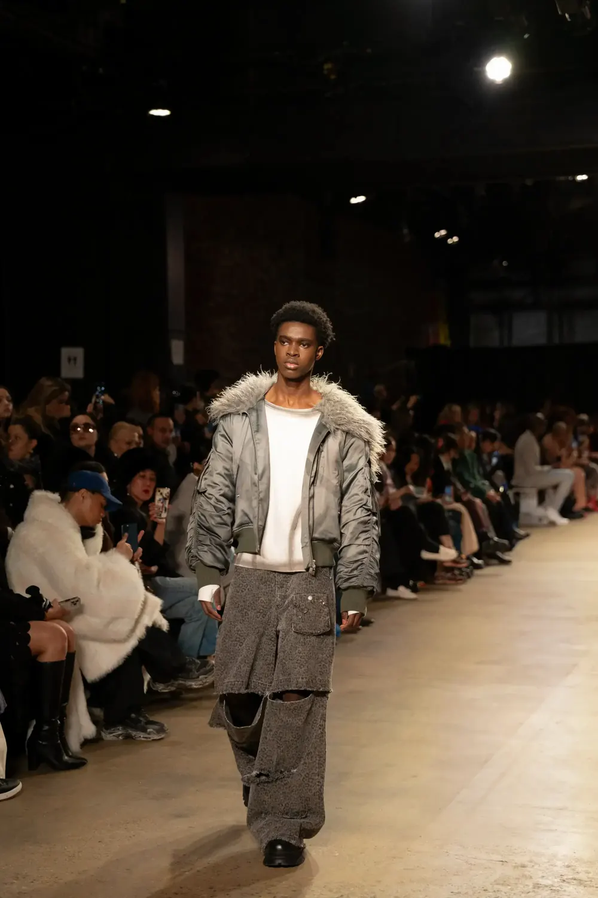
Global Fashion Collective · Défilé automne-hiver 2025 · New York · FW25